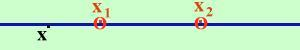
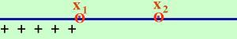
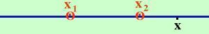
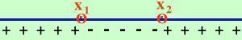

Delta del polinomio maggiore di zero
Voglio trovare
il segno del polinomio di secondo grado
ax2 + bx + c
Considero l'equazione associata
ax2 + bx + c = 0
Se il
discriminante
dell'equazione e' maggiore di zero allora ho due soluzioni
x1
e
x2
reali e distinte
e
in questo caso posso utilizzare la
decomposizione del trinomio
ax2 + bx + c =
a ( x - x1)(x -
x2)
Quindi bastera' trovare il segno di
a ( x - x1)(x -
x2)
Anzi, siccome a e' maggiore di zero possiamo limitarci a
( x - x1)(x -
x2)
Dobbiamo trovare il segno di quest'espressione quando ad x assegniamo
un valore sulla retta reale
Ho cerchiato i valori perche' in quei punti
l'espressione vale zero
Vi sono tre possibilita', la x si puo' trovare (partendo da sinistra):
- Prima di x1
- tra x1 ed
x2
- Dopo x2
dobbiamo studiare tutti e tre i casi
- la x si trova prima di x1

in questo caso il fattore
( x - x1) e' negativo (perche'
ho un numero piu' a sinistra meno un numero piu' a destra)
ma anche il fattore
( x - x2) e' negativo (perche'
ho un numero piu' a sinistra meno un numero piu' a destra)
quindi l'espressione
( x - x1)(x -
x2)
essendo il prodotto di due fattori negativi e' positiva

- la x si trova tra x1 ed
x2
in questo caso il fattore
( x - x1) e' positivo (perche'
ho un numero piu' a destra meno un numero piu' a sinistra)
mentre il fattore
( x - x2) e' negativo (perche'
ho un numero piu' a sinistra meno un numero piu' a destra)
quindi l'espressione
( x - x1)(x -
x2)
essendo il prodotto di un positivo ed un negativo e' negativa
- La x si trova dopo x2

in questo caso il fattore
( x - x1) e' positivo (perche'
ho un numero piu' a destra meno un numero piu' a sinistra)
ma anche il fattore
( x - x2) e' positivo
(perche'
ho un numero piu' a destra meno un numero piu' a sinistra)
quindi l'espressione
( x - x1)(x -
x2)
essendo il prodotto di due numeri positivi e' positiva

Raccogliendo i risultati avremo:

Cioe' se il delta e' maggiore di zero il trinomio e' positivo per
valori esterni all'intervallo delle radici ed e' negativo per
valori interni


a 0 |
ax
2 + bx + c
0 |
ax2 + bx + c
 0
0 |
 valori esterni all'intervallo delle radici
valori esterni all'intervallo delle radici
|
 valori interni all'intervallo delle radici
valori interni all'intervallo delle radici
|
|